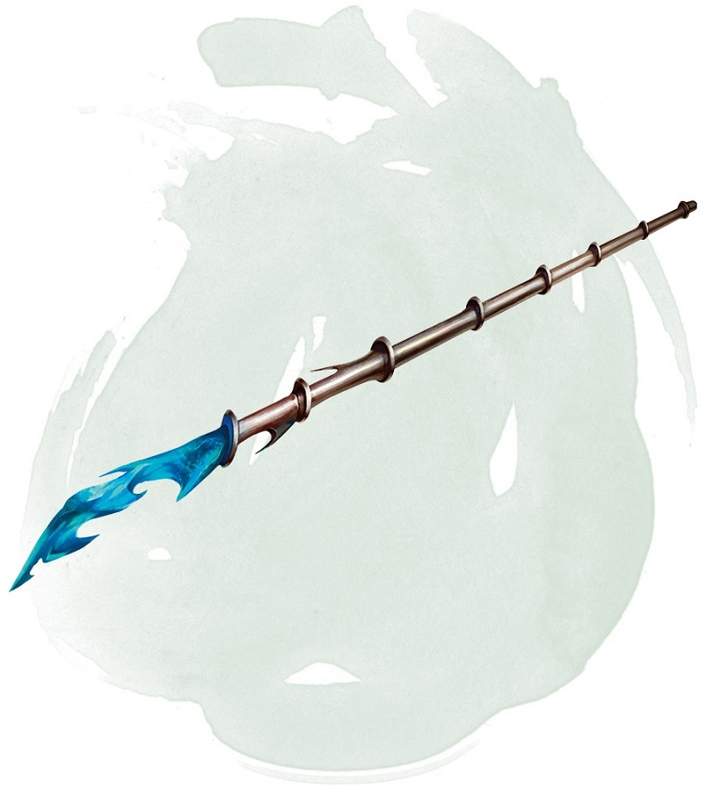

Wand of Magic Missiles
Wand, uncommon
This wand has 7 charges. While holding it, you can use an action to expend 1 or more of its charges to cast the magic missile spell from it. For 1 charge, you cast the 1st-level version of the spell. You can increase the spell slot level by one for each additional charge you expend.
The wand regains 1d6 + 1 expended charges daily at dawn. If you expend the wand's last charge, roll a d20. On a 1, the wand crumbles into ashes and is destroyed.
The wand regains 1d6 + 1 expended charges daily at dawn. If you expend the wand's last charge, roll a d20. On a 1, the wand crumbles into ashes and is destroyed.
Dungeon Master´s Guide (SRD)
